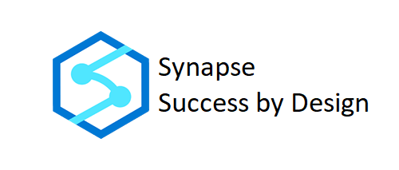
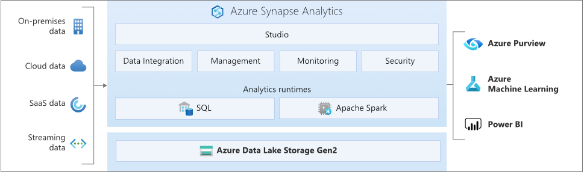

Implementation Success #
Overview #
The Success By Design: Synapse Implementation Success method is designed to help guide you to a successful solution implementation that includes Azure Synapse Analytics as a component. This method is designed to complement your solution implementation project by adding suggested checks at strategic points during your project that can help assure a successful implementation of Azure Synapse Analytics. This method does not replace or change your chosen project management method (SCRUM, Agile, Waterfall), but will suggest validations to make while your project is in flight to improve the success of your overall deployment to a production environment.
Azure Synapse is an enterprise analytics service that accelerates time to insight across data warehouses and big data systems. Azure Synapse brings together the best of SQL technologies used in enterprise data warehousing, Spark technologies used for big data, Pipelines for data integration and ETL/ELT, and deep integration with other Azure services such as Power BI, CosmosDB, and AzureML.

The Synapse Implementation Success method uses a strategic checkpoint approach to assessing and monitoring a project’s progress.
The goals of these checkpoints include:
- Proactive identification of possible issues and blockers
- Continuous validation of the solution’s fit to the use case
- Successful deployment to production
- Smooth operation and monitoring once in production
Synapse Implementation Success checkpoints are invoked at four key places within the Implementation Project:
- Project Planning
- Solution Development
- Pre Go-Live
- Post Go-Live
Synapse Implementation Success Strategic Checkpoints #
Here are the strategic checkpoints we recommend during these four project phases
Project Planning #
Solution Evaluation #
The Solution in total will need to be evaluated with a focus on how it is making use of Azure Synapse as part of the architecture. An assessment will gather data that will identify the components of Azure Synapse that are being used, the interfaces each will have with other products, review the data sources, the data consumers, the personas, and use cases. This assessment will also gather data about the existing environment including detailed specifications from existing data warehouses, big data environments and integration and data consumption tooling. The assessment will identify which Synapse components will be implemented and thus what evaluations and check points should be made throughout the implementation effort. This assessment will also provide additional information to make validate design and implementation against requirements, constraints and assumptions.
- Perform an Assessment of the solution
- Identify the Azure Synapse Analytics solution components
- Execute Evaluations based upon the solution components
- Review the results of these evaluations and respond accordingly
Project Plan Evaluation #
Evaluate the project plan as it relates to the Azure Synapse Analytics work that needs to be completed. This evaluation is not to make project plan changes but to identify steps that may be missing that could lead to blockers and impact the planned timeline. Once evaluated, the project plan may need to be modified and updated in response to the findings.
- Evaluate Project Plan at a high level.
- Evaluate project planning specific to the solution architecture components of Azure Synapse Analytics being implemented.
- Review the results and adjust accordingly.
Solution Development Environment Evaluation #
Evaluate the environment that is to be used to develop the solution. Having a controlled develop - test - production development environment incorporating automated deployment and source code control is essential to a successful and smooth solution development and the project success.
- Evaluate Solution Development Environment Design.
- Review the results and adjust accordingly.
Assess Team Readiness and Training #
Evaluate the project team with a focus their skill level and readiness to implement the solution incorporating Azure Synapse Analytics.
It will be important for the project’s success to have the correct skillsets. There are many and differing skillsets required for a successful implementation using Azure Synapse Analytics. Take time at this point to identify gaps and secure resources with the required skillset or take the time to complete training.
This evaluation is critical at this stage. The lack of the proper skillset will impact both the timeline and the overall success of the solution.
- Evaluate the team’s Azure Synapse Analytics Skillset
- Secure additional skilled team members or skill-up team members
Solution Development #
Periodic Quality Checks #
Throughout the solution development checks should be made periodically to validate that the solution is being built with respect to recommended practices as they apply to the different components of Azure Synapse Analytics. Check that the project use cases will be satisfied, and the enterprise requirements are being met. For the purposes of this method, we are calling these periodic evaluations quality checks. Implement the following quality checks as appropriate to your solution.
- Quality Checks for Workspaces
- Quality Checks for Data Integration
- Quality Checks for dedicated SQL Pools
- Quality Checks for serverless SQL Pools
- Quality Checks for Spark Pools
Recommend Additional Skill Building #
As the project progresses identify if additional skills are needed. Take the time to get the additional skillset to improve the quality of the solution and avoid project delays and project timeline impacts.
Pre Go-Live #
Prior to deploying your solution to production, the following reviews are recommended to assess the preparedness of the solution and the organization for adoption and support of the solution on Azure Synapse Analytics. The Go-Live checklists for the specific Azure Synapse Analytics components will provide a final check of readiness to successfully move to production.
Post Go-Live #
Following the deployment to production the following reviews are recommended to assure that the solution is operating as expected now that it is in production. Select the reviews appropriate to the solution
Conclusion #
The Success By Design Synapse Implementation Success method is provided to help you with implementing a solution incorporating Azure Synapse Analytics. By utilizing this method during your Azure Synapse Analytics implementation project, you should be able to identify and address any issues early on and deploy to production a solution that benefits your business and delights your users.